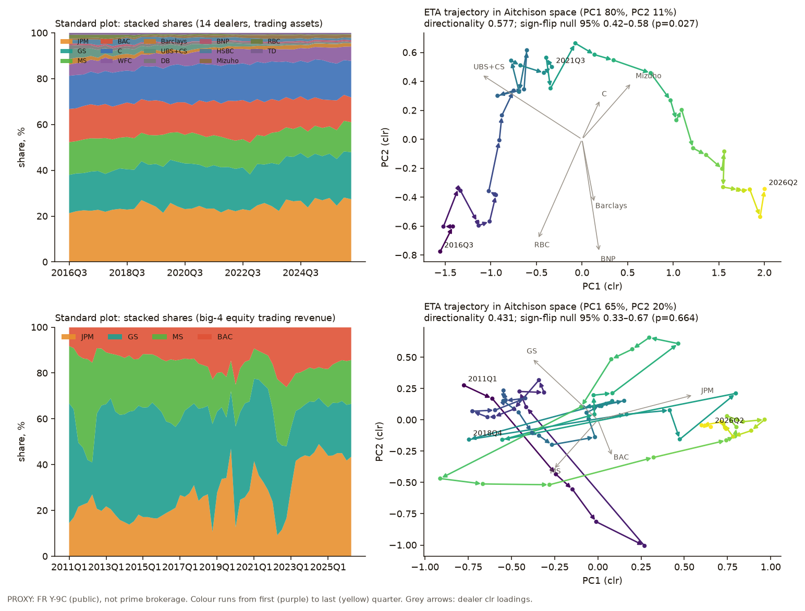
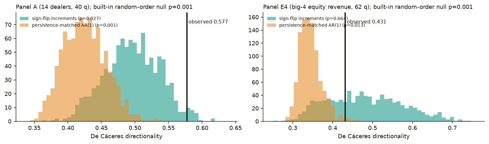
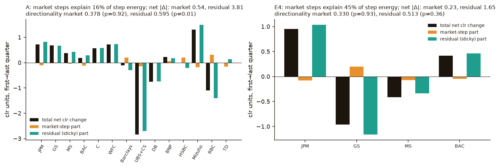
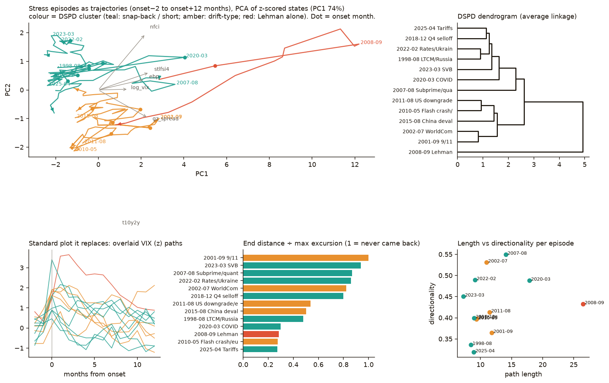
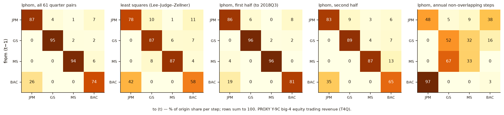
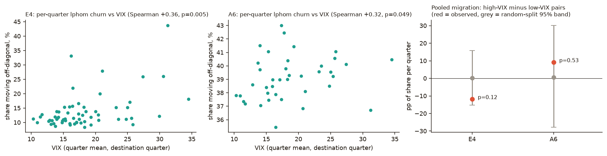
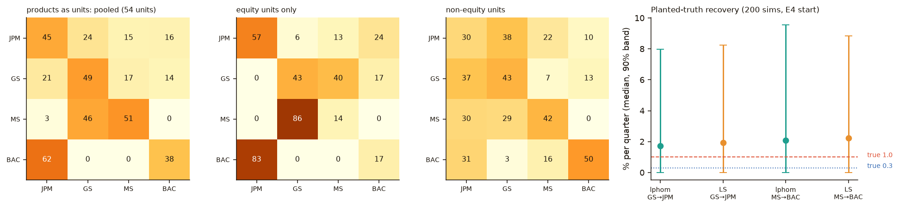

Thursday · November 12, 2026 · scheduled edition · catch-up published Friday morning ET · aimed at Q1 · exotic
Methods scout
Two new exotic methods for the same question: when a dealer’s share moves, is it the market, or a sticky walk in one direction — and can we see, or even recover, the flows? Run on a clearly labelled PROXY panel. A same-day ad hoc edition already covered codyn and Lovell proportionality; these two are different.
● Catch-up: the 2:12 PM ET run finished the analyses, then stopped before this page was published● ecotraj: residual (sticky) increments on 14-dealer trading-asset shares are directional (dir 0.595, sign-flip p = 0.008)● Equity-revenue path is a wiggly GS→JPM swap: overall directionality fails a sign-flip null (p = 0.664)● lphom transfer matrices on consecutive quarters are not identified (cell bounds typically 0–1); planted 1% GS→JPM flow is not recovered
The short version
This page. The scheduled 12 November 2:12 PM ET methods scout was interrupted after ecotraj and lphom had been run, and before figures and this page were published. This is the Friday 13 November morning catch-up of that edition, not a second daily scout and not a redo of the ad hoc exotic run.
Data first. Q1 still has no per-firm prime-brokerage revenue or balances for the top 25. Everything here is a PROXY: public FR Y-9C trading assets (14 dealers, 2016Q3–2026Q2) and big-4 equity trading revenue (2011Q1–2026Q2), plus FRED market series. Descriptive only; no forecasts.
ecotraj (ecological trajectory analysis, Ecological Monographs 2019) recommend for promote workflow. It plots a composition as a path in Aitchison (clr) space and tests whether that path has a preferred direction. On trading-asset shares the path is directional (0.577) against a sign-flip null (p = 0.027) and a persistence-matched AR(1) (p = 0.001). After splitting each clr step into a market-explained part and a residual, the residual path carries almost all of the net displacement (3.81 vs 0.54) and itself beats a sign-flip null (dir 0.595, p = 0.008). On equity revenue the picture is different: the GS→JPM swap is almost entirely in the residual net (GS −1.16, JPM +1.03 clr), but the residual path is not significantly directional (p = 0.365), and the overall path fails a sign-flip null (p = 0.664). The visual pick is a map of 13 macro-financial stress episodes as trajectories, clustered by DSPD distance: Lehman is in a class of its own; 9/11 never came back.
lphom (linear-programming voter-transfer matrices, Sociological Methods & Research 2024) interesting. The idea is to recover a share-flow matrix \(P\) — who kept share, who it moved to — the thing Q1 actually wants. On a single closed panel of consecutive quarters the matrix is not identified: Duncan–Davis-style bounds are typically 0–1 (median width 0.88 on the big-4 panel). A planted 1% GS→JPM quarterly flow is not recovered. The implied GS→JPM cell on equity revenue is 0, which contradicts the sticky swap already seen by MARSS, proportionality, and ecotraj’s residual net. Using product-year lines as “voting units” (54 units) is a better design, but homogeneity error stays high. The natural next data for this method is Form ADV Schedule D, where each fund is a real unit.
Data used (all public regulatory data, aggregated): FR Y-9C trading panel 2008Q1–2026Q2 built from FFIEC/NIC BHCF bulk files; FRED VIXCLS, NASDAQCOM and BAA10Y; a monthly macro-financial stress state used only for the episode map. Only shares, fitted structure and charts are shown. Scripts and JSON outputs: docs/methods-scout/runs/2026-11-12/. Pre-registration note: this panel also feeds the pre-registered Y-9C trading-OT forecast track, whose out-of-sample run is not authorized. Today’s work is descriptive and runs none of that track’s forecasts, but it does look at 2014–2026 data inside that track’s OOS window.
Q1
Where the question stands
Q1 (2026-11-10): “How have prime broker revenue/activity share dynamics changed among the top 25 brokers and how can we gain insight into market based ones vs real sticky share migration?”
Progress (PROXY only), building on 11-11 and the 11-12 ad hoc. (1) The 11-11 MARSS split and the ad hoc residual proportionality already said the GS→JPM equity-revenue swap is sticky, and that foreign IHC trading-asset share fell from 13.8% to 5.9% with almost none of that net shift in the market. ecotraj adds a path geometry test: on trading assets, the residual (non-market) increments themselves walk in one direction (p = 0.008). On equity revenue, the same residual net is a GS→JPM swap, but the path is not a straight walk — it wiggles, and directionality does not beat a sign-flip. That is why a rate-of-change can be significant (ad hoc, p = 0.001) while a directionality test is not: the composition gets from here to there without pointing the same way each quarter. (2) lphom tried to go one step further and name the flows. On this panel it cannot: the transfer matrix from consecutive quarters is unidentified, and a planted flow is missed. The method is still the right shape of answer once we have many units (Form ADV filers). (3) Missing data is unchanged. Status: in progress.
Data searchTop-25 PB data: missing
No new top-25 per-firm prime-brokerage series was found today. The PROXY and the free Form ADV Schedule D build option are the same as on 11-11 and the ad hoc edition. lphom makes that build more urgent: the method needs many “voting units,” and each fund’s prime-broker affiliation is exactly that.
Method 01
ecotraj: share change as a trajectory, with a test for direction
De Cáceres et al. (2019), Ecological Monographs 89:e01350 · Sturbois et al. (2021), Ecological Modelling 440:109400 · Djeghri et al. (2026), Ecological Monographs 96(2):e70058 · CRAN ecotraj 1.2.2 · community ecology · recommend for the promote workflow — not promoted
Target question. Q1, in trajectory language: does the share composition walk with a preferred direction (sticky migration), or does it wander like a persistent random path, and how much of that walk is just the market?
Why it is a visual, MaxLIPO-style find, and fast enough. The usual chart is a stacked-area plot of shares, which hides direction. ecotraj gives a no-tuning path in a resemblance space, a directionality number, and a way to compare whole trajectories (DSPD). Three analyses: (1a) directionality of the clr path vs a built-in random-order null, a sign-flip-increments null, and a persistence-matched AR(1); (1b) market vs residual sub-trajectories, on both levels and increments; (1c) 13 stress episodes as trajectories in a z-scored macro state, clustered by DSPD. Runtime for 1a–1c was 8.0 minutes (R 4.5.3, ecotraj 1.2.2, seed 20261112, 999 draws). The built-in permutation (random survey order) is too weak on a trending composition — the same lesson as InspectChangepoint — so the sign-flip and AR(1) nulls are the ones we trust.

Figure 1. The stacked areas (left) are the standard plot. The paths (right) are the same compositions in clr principal-component space. Colour runs from the first quarter (purple) to the last (yellow).

Figure 2. Observed directionality (black line) against 999 sign-flip paths (teal) and 999 persistence-matched AR(1) paths (amber). Panel A beats both; panel E4 beats AR(1) but sits inside the sign-flip cloud.

Figure 3. Increment-level split: each clr step is regressed on VIX, four-quarter Nasdaq return, the BAA spread, and industry growth. Market steps explain 16% of step energy on panel A and 45% on E4. Residual net displacement dominates both.

Figure 4. Thirteen stress episodes as 15-month trajectories (onset −2 to +12) in a six-series macro state (log VIX, NFCI, STLFSI4, T10Y2Y, GZ spread, EBP). Colour is the DSPD cluster. The overlaid VIX paths (lower left) are the chart this replaces.
1a. Directionality vs three nulls. Panel A (40 quarters, 14 dealers): directionality 0.577, straightness 0.204. Built-in random-order p = 0.001; sign-flip p = 0.027 (null 95% band 0.42–0.58); AR(1) p = 0.001 (band 0.37–0.49). Panel E4 (62 quarters, big-4 equity revenue): directionality 0.431, straightness 0.081. Built-in p = 0.001, AR(1) p = 0.013, but sign-flip p = 0.664 (band 0.33–0.67). The equity-revenue composition does move (JPM 14.5% → 43.4%, GS 52.3% → 23.1%), but quarter to quarter it does not keep a heading. A directionality test and a rate-of-change test (ad hoc Collins p = 0.001) are asking different things.
1b. Market vs residual, and why the increment split matters. Residualizing clr levels on the same market covariates hid the sticky walk: on panel A the residual path’s sign-flip p was 0.994. Residualizing increments reverses that. Market steps explain 16% of step energy on A and 45% on E4. Residual net displacement is 3.81 vs market 0.54 on A (UBS+CS residual net −2.70, Mizuho +1.49, JPM +0.83), and 1.65 vs 0.23 on E4 (GS −1.16, JPM +1.03). Residual directionality beats a sign-flip on A (0.595, p = 0.008) and does not on E4 (0.513, p = 0.365). Market sub-paths are not directional on either panel (p = 0.92 and 0.93). This agrees with MARSS and with residual Lovell ρ: the net GS→JPM equity swap is sticky; the trading-asset reordering is also sticky, and here it is directional as a path.
1c. Stress episodes as trajectories (the visual pick; not a Q1 forecast). DSPD clusters put Lehman in a class of its own (longest path, 26.5; recovery ratio 0.29 — most of the excursion came back). COVID is long (17.9) and also snaps back (0.30), but sits in the short/snap-back group. 9/11 never came back (ratio 1.0); SVB almost stayed put (0.94). Window stability: 9-month vs 15-month DSPD Spearman 0.96 (permutation p ≤ 0.001). DSPD vs lockstep distance, Spearman 0.93. This is a graph, not a forecast, and it does not use the sealed TRACE holdout or the coverage study.
1 · EngineeringEffort M
A faithful Python or Rust port of directionality and DSPD
ecotraj is R-only. Port trajectoryDirectionality, the increment sign-flip null, and DSPD, with v1.2.2 as the oracle, then run it on a Form ADV-scale panel.
Test. Parity on today’s numbers (A dir 0.577301, E4 dir 0.431413, A residual-increment dir 0.595092), then a wall-time comparison on a larger panel.
2 · MathTop pick
An increment-level market/residual split whose size is right
Today’s level residualization hid a directional residual walk (A, p = 0.994) that the increment split finds (p = 0.008). The sauce is to make that split a formal, composition-valid procedure with a sign-flip test that has the right size. Effort L.
Test. On simulated share panels, residual directionality stays inside a pre-registered band under a market factor alone, and has power of at least 0.80 on a planted sticky swap at T = 62.
3 · New use on our dataEffort S
Episode maps, and the same path, on real PB shares
Keep the stress-episode DSPD map as a recurring graph, and rerun the increment split unchanged on Form ADV prime-broker counts once that panel exists.
Test. Recurrence of a directional residual path on trading-asset-like counts, and of a wiggly-but-sticky GS→JPM residual net on revenue-like counts — or an honest miss.
Method 02
lphom: a share-flow matrix, when the units can identify it
Pavía & Romero (2024), Sociological Methods & Research 53(3):1491–1533 (online 2022) · Romero, Pavía, Martín & Romero (2020), Journal of Applied Statistics 47:2711–2736 · CRAN lphom 0.3.5.7 · political science / ecological inference · interesting — not promoted
Found via. Journal · Sociological Methods & Research · 2026-11-12 scheduled exotic scout · field: ecological inference (voter-transition matrices). Paper: https://doi.org/10.1177/00491241221092725. Also used: the CRAN page https://cran.r-project.org/package=lphom, and Romero et al. 2020 (doi:10.1080/02664763.2020.1804842) for the baseline lphom algorithm and the deterministic bounds. The 2024 paper’s improved algorithms are tslphom and nslphom; this run used the baseline lphom(), which is the honest first try and already shows the identification problem. X and SSRN were not the discovery path.
Target question. Q1’s second half, taken literally: can we recover a transfer matrix that says, of last quarter’s share, how much each dealer kept and where the rest went — and does that matrix change with the market?
Three analyses, plus a better-units check. (2a) Fit \(P\) on E4 and on a six-bloc version of panel A, against a constrained least-squares (Lee–Judge–Zellner) baseline, with half-sample and annual cuts. (2b) High-VIX vs low-VIX quarter pairs, with a random-split null. (2c) A no-migration persistence null, and a planted-truth recovery (true GS→JPM flow 1% per quarter). Extra: treat product-year lines as voting units (54 units). Runtime 3.3 minutes (seed 20261112).

Figure 5. Implied transfer matrices on big-4 equity trading revenue. Rows are the origin dealer, columns the destination; entries are percent of origin share per step. These are point estimates. The deterministic bounds behind them are typically 0–1 (median width 0.88), so the cells are not identified.

Figure 6. Per-quarter implied churn vs VIX, and the high-VIX minus low-VIX pooled migration contrast (red) against a random-split 95% band (grey). Neither contrast is significant (E4 p = 0.123, A6 p = 0.53).

Figure 7. Left: product-year units (54 rows) give a better-posed ecological-inference table; GS→JPM is 21% in the pooled point estimate, 0% in equity-only units, 37% in non-equity units. Right: planted-truth recovery on E4-like paths. The true 1% GS→JPM flow (red) and 0.3% MS→BAC flow (blue) are not recovered; median lphom L1 error 0.68.
2a. Point estimates look tidy; the bounds are not. On E4, lphom retention is JPM 87%, GS 95%, MS 94%, BAC 74% (half-lives 5, 15, 11.6, 2.3 quarters). Implied migration is 10.3% of share per quarter, versus 20.1% for least squares. The GS→JPM cell is 0. That already conflicts with every other Q1 method we have trusted. The reason is identification: deterministic bounds have median width 0.88 on E4 and 0.97 on the six-bloc trading-asset panel; 63% and 67% of cells are wider than 0.80. A single closed time series, even with 61 quarter pairs, is one “election,” not many voting units.
2b. High vs low VIX. E4 implied migration is 10.8% in high-VIX quarters and 22.6% in low-VIX quarters, difference −12 pp, two-sided p = 0.123 against a random split (null band −15 to +16 pp). A6: p = 0.53. Per-quarter churn vs VIX has Spearman +0.36 on E4 (p = 0.005), but the pooled split test does not confirm a regime in \(P\). We do not treat that Spearman as a Q1 finding.
2c. Persistence null and planted truth. Observed E4 migration (10.3%) is lower than a no-migration AR(1) null (median 20%, p = 0.992): persistence alone already looks like churn to this estimator. Observed GS→JPM = 0 sits at the bottom of that null (p = 1). In 200 planted simulations with a true 1% GS→JPM flow and a 0.3% MS→BAC flow, lphom’s median recovered GS→JPM is 1.7% with a 90% band of 0–8%, and the median L1 error on \(P\) is 0.68 (least squares 0.76; lphom is better in 60% of draws). The method does not recover a small planted flow on this design.
Product-year units. Treating each product line in each year as a unit (54 units, 2009–2024) is closer to what ecological inference needs. Pooled GS→JPM is 21%, but a shuffle null does not flag that cell (p = 0.116). Mean retention is unusually low and the largest off-diagonal is unusually large against that null (both p = 0.001), and homogeneity error is high (HETe 28). Equity-only units put GS→JPM at 0 again. This is a design improvement, not a finding we would act on.
Honest status. Recommended as interesting, not for the promote workflow, until it is run on data with real units. The 2024 paper’s tslphom / nslphom estimators are the ones to try then; they were not needed to see that today’s design fails.
1 · EngineeringEffort M
tslphom / nslphom in a maintained library, with bounds as first-class output
Wrap the 2024 estimators, the deterministic bounds, and a planted-truth harness, so a run that is unidentified fails loudly instead of returning a tidy heatmap.
Test. Replicate today’s vacuous E4 bounds (median width 0.88) and the planted L1 error (median 0.68), then show tighter bounds once real units are supplied.
2 · MathEffort L
A transfer estimator that knows the series is persistent
A no-migration AR(1) already produces ~20% apparent quarterly churn. The sauce is an estimator whose null accounts for persistence, and whose interval is not [0, 1] on a single compositional path.
Test. On simulated persistent panels with no true flow, coverage of a pre-registered interval for off-diagonal cells, and power on a planted 1% GS→JPM flow at T = 62.
3 · New use on our dataTop pick
Form ADV filers as the voting units
Each fund’s prime-broker affiliation in Schedule D is a real unit. That is the design lphom is built for, and it is the free route to Q1’s missing data. Effort M once the panel exists; the blocker is the build, not the math.
Test. Informative bounds (median width clearly below 0.5) and a pre-registered GS→JPM (or foreign vs US) flow that either recurs or honestly does not.
Watch
Watchlist additions
Both methods are added as trialed on the watchlist. tslphom and nslphom stay with the lphom row as the estimators to use if the method is retried on Form ADV units. Nothing already marked trialed was rerun. MaxLIPO remains on the watchlist as the MD’s example, not a pick. Research-lab PRs #21 and #25 were not touched. No APPROVAL.md was written; nothing is promoted.